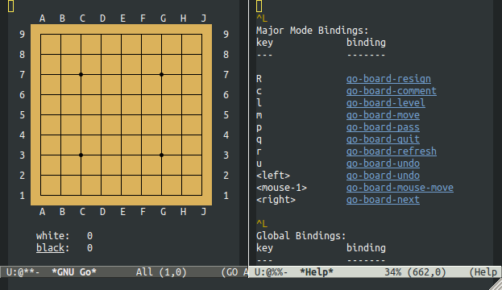
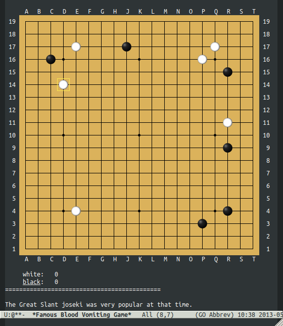

el-go – Emacs interface to the game of GO
Table of Contents
1 Introduction
The el-go library provides an Emacs interface to the game of GO.
Specifically, a number of GO backends including the Smart Game Format
(SGF) file format, the Go Text Protocol (GTP) which may be used to
play against the gnugo program, and partial support for the Internet
Go Server (IGS) format which is not an open standard and is thus
reverse engineered from sanctioned IGS clients (currently this backend
only really supports watching games, not playing them).
2 Installation
- Grab this git repository.
git clone git://github.com/eschulte/el-go.git
- Add the path to the cloned repository to your load-path.
(add-to-list 'load-path "/path/to/el-go")
- Load
el-go.(require 'el-go)
3 Usage
- go-play
- Use the
play-gofunction (M-x play-go) to play a game of GO either against the gnugo program or against another person on the same machine. Click on the board with the mouse to move. Other commands are bound to keys and may be with listed (C-h b).
Playing gnugo on a 9 by 9 board with key bindings shown.
- go-view-sgf
- Use the
view-sgffunction (M-x view-sgf) to load an SGF file and replay the saved game. Use the right and left arrows to navigate the saved game.
This example shows the game in sgf-files/jp-ming-5.sgf.
4 License
Licensed under the GPLV3, see the COPYING file in this directory for more information.